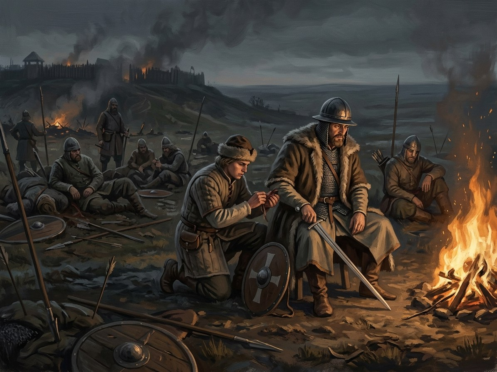

Battle of the Vorskla¶
What the chronicles say [Historical record]¶
Fought on 12 August 1399 on the Vorskla near present-day Poltava. Vytautas’s coalition (Lithuanians, Ruthenian princes, Poles, Moldavians and Wallachians, some Order knights under Marquard von Salzbach, and the exiled khan Tokhtamysh) was defeated by the army of Edigu and Khan Temür Qutlugh. About 50 princes fought under Vytautas and about 20 were killed, an estimate from Zenonas Ivinskis (1978); later accounts give far higher figures. The dead included Andrei of Polotsk and Dmitry (Demetrius) Starshy, Algirdas’s sons, and Spytko II of Melsztyn. Temür Qutlugh proposed a three-day truce that was a trick to gain time and feigned a retreat to draw the Lithuanians from their wagon-fort; Tokhtamysh fled when he judged it lost. Vytautas barely escaped. Marquard, komtur of Ragnit, brought an Order contingent (en.wikipedia’s 1,600 horse is unconfirmed); Posilge lists nine members of the Order killed and names Marquard among the rescued, and a Marienburg treasurer’s entry of 2 Nov 1399 records the return of the money given for the unit. Consequences: Lithuanian expansion into southern Ruthenia was blocked, Smolensk, Novgorod and Pskov rebelled (Smolensk was recaptured in 1404), he reaffirmed the union with Jogaila and turned east to Moscow and west to the Order; he may have learned the feigned-retreat tactic he used at Grunwald. Sources: Długosz, Posilge, the Itinerarium Witolda, Ivinskis (Wikipedia, Battle of the Vorskla River). Treat the casualty numbers with caution.
Battle of the Vorskla

Battle of the Vorskla · event¶
Tipas |
įvykis |
Metai |
1399-08-12 |
Status |
Istoriniai duomenys |
Knyga |
|
Pastaba |
Battle of the Vorskla (12 Aug 1399): catastrophic defeat of Vytautas by the Golden Horde. |
What really happened [The saga’s invention]¶
Henė appeared to Vytautas as a messenger of the East with a vision of a golden throne and a crown at Sarai, and he accepted it in the winter, at which the pebble went cold. The Steppe-Hunger fed: dust devils walked beside the columns and horse-hair turned up in wells. The Root-Mother could not follow, so the wolves did not come; Kalvis and a few loyal wolves went anyway and died on the field. Perkūnas’s verdict on a man who broke his oaths: Form 5 breaks. Vytautas escapes with a handful and no fog from his mother, shame only; he speaks the Five-Voice alone and pays the whole bill: sight and hearing dim, a face goes from memory. The Steppe-Hunger feeds on the field behind him.
Consequences¶
Caused by the Treaty of Salynas (which freed his western flank) and leading to the Union of Vilnius and Radom. Jadwiga’s death on 17 July, a month earlier, is the last warning he ignored (her death).
Dramatisation¶
Book II ch. 22 „Geležinis Maršas“ (Spytko II), ch. 23 „Raudonas Dangus“ (Vytautas), ch. 24 „Edigėjus“ (Edigu; 11 August), ch. 25 „Dulkės ir Kraujas“ (Spytko), ch. 26 „Skerdynės prie Upės“ (Vytautas; 12 August), ch. 27 „Antrasis Bėgimas“ (Vytautas) and ch. 28 „Kijevo Išpirka“ (a Kyivan monk). High summer; the Book II climax.
Ryšiai
Caused by: Treaty of Salynas — Western peace frees Vytautas for the steppe.
Causes: Union of Vilnius and Radom
Location: Vorskla river
Participants: Edigu · Kalvis (the Smith) — Crosses the Dnieper with eleven wolves; they crumble to ash. · Marquard von Salzbach — Komtur of Ragnit with an Order contingent; Posilge lists nine of the Order dead and names Marquard among the rescued. · Tokhtamysh · Vytautas
Sąsajos¶
graph LR
edigu["Edigu"]
ev_salynas["Treaty of Salynas"]
ev_vilnius_radom["Union of Vilnius and Radom"]
ev_vorskla["Battle of the Vorskla"]
kalvis["Kalvis (the Smith)"]
marquard["Marquard von Salzbach"]
tokhtamysh["Tokhtamysh"]
vorskla["Vorskla river"]
vytautas["Vytautas"]
ev_vorskla -->|Location| vorskla
ev_vorskla -->|Causes| ev_vilnius_radom
ev_salynas -->|Causes| ev_vorskla
vytautas -->|Took part in| ev_vorskla
edigu -->|Took part in| ev_vorskla
tokhtamysh -->|Took part in| ev_vorskla
marquard -->|Took part in| ev_vorskla
kalvis -->|Took part in| ev_vorskla
style ev_vorskla stroke-width:3px